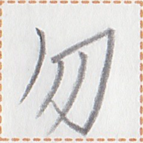
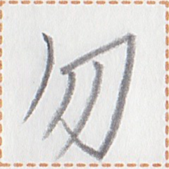

← Previous
Index
Next →
English: My dad and I are going to hunt together.
Chinese: 我和爸爸去打猎。
Chinese (pinyin): Wǒ hé bàba qù dǎliè.
Pekzep (latin transcription): pai2 kuak1 at pai2 mok1 sep saup1.
Pekzep (hanzi transcription): 我父加我行享獣。
Pekzep (linzklā): 


 

Analysis:
| pai2 | 我 | | noun-modifier | | my |
| kuak1 | 父 | | noun | | father |
| at | 加 | | noun-conjunction | | and |
| pai2 | 我 | | noun | | I |
| mok1 | 行 | | verb-modifier | modality marker | will |
| sep // saup1 | 享 // 獣 | // | verb-object compound | | to hunt animals |